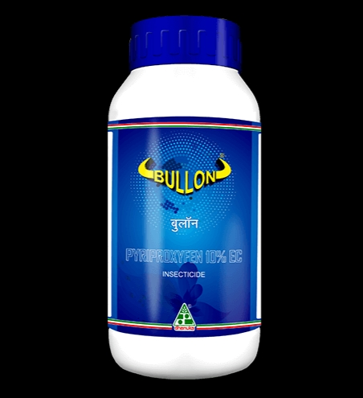

DESCRIPTION
*Bullon (Pyriproxyfen 10% Ec) is an insect growth regulator that
regulates the transition from one developmental stage to another
in Whitefly. Thus gives excellent efficacy and duration of control.
MODE OF ACTION
Bullon is an insect growth regulator that mimics the action of
Juvenile
hormone (JH), that regulates the transition from one
developmental stage to another. Bullon causes embryogenesis
to stop in exposed eggs and in the female reproductive system.
1. Supressor of Embryogenesis
2. Inhibition of metamorphosis
3. Inhibitor of reproduction
PACK SIZE
*100 ml, 250 ml, 500 ml, 1 Ltr
FEATURES & BENEFITS
*It controls all stages of white fly �Egg, Nymph and adult.
* It prevents spread of cotton leaf curl virus by controlling its
vector white fly.
*It has translaminar activity which helps
to control white fly on lower surface of leaf.
* It gives
longer duration of control.
* It controls white flies
population that checks honey dew
release in the process
prevents from black sooty mold.
Rs.300